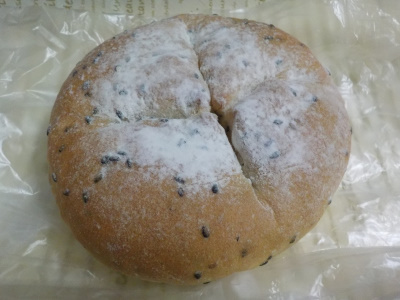
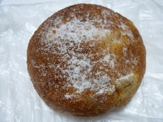

パネッテリア フェリーチェの黒ゴマとチーズのフランスパン
2018/11/18
----------------------------------------
フランスパンらしい固めのパンにごまがすり込んでありました。

中にはチーズが多目に入っていました。具が多くてお得なパンだなーって思いました。
チーズには塩分があるので、濃い味付けのパンでした。
そのままパクパク美味しく食べました。
島根県雲南市三刀屋町三刀屋73-5
みしまや三刀屋店内
2018/11/18
----------------------------------------
フランスパンらしい固めのパンにごまがすり込んでありました。

中にはチーズが多目に入っていました。具が多くてお得なパンだなーって思いました。
チーズには塩分があるので、濃い味付けのパンでした。
そのままパクパク美味しく食べました。
2015/07/26
----------------------------------------
近頃、紅茶もリンゴも縁がないなーと思い食べたくなりました。

紅茶の香り強いし、リンゴの味もちゃんとあったので、満足でした。
ページトップへ